실험맨 vs 고양이, 하루 씻고 꾸미는 시간은 누가 더 길까
고양이는 틈만 나면 몸을 핥아요. 그래서 '고양이는 하루 종일 씻는다'는 말도 있어요. 그 말이 맞다면 실험맨의 1시간 24분은 상대가 안 될 거예요. 정말 상대가 안 될까요?
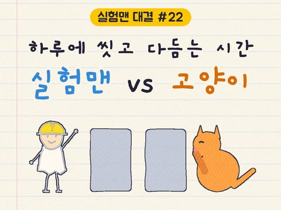
독자 투표
실험맨 vs 고양이, 세 판 승부로 하루 씻고 꾸미는 시간이 더 긴 쪽은 누굴까?
3줄 요약
- 평균 한국인 '실험맨'이 하루 씻고 꾸미는 데 쓰는 시간과, 집고양이가 하루 혼자 털을 핥고 긁어 고르는 시간을 견줘요.
- 실험맨은 씻고 양치하는 데 하루 69분, 화장·머리 손질 같은 꾸미기에 15분을 써요. 합쳐 1시간 24분이에요.
- 하루 24시간 판, 깨어 있는 시간 판, 나이·성별로 나눠 실험맨이 가장 길 것 같은 집단 판, 세 판 승부예요.
조건과 규칙
- 실험맨은 평균 한국인이에요. 통계청 생활시간조사 2024에서 10세 이상 남녀가 하루에 '개인위생'(씻기·목욕·양치 등)과 '외모관리'(화장·머리 손질 등)에 쓴 평균 분을 더해요. 그날 안 한 사람은 0분으로 들어가요.
- 미용실처럼 남이 해 주는 손질은 빼요. 고양이도 다른 고양이가 핥아 주는 시간은 빼고, 혼자 핥고 긁는 그루밍만 세요.
- 고양이는 집고양이 품종, 대학 연구소 단체 우리의 12마리예요. 하루 내내 관찰한 연구 가운데 고양이 수가 가장 많은 연구를 기본으로 써요(7일 동안 잰 뉴질랜드 연구).
- 3판은 나이·성별로 나눴을 때 씻고 꾸미는 시간이 가장 길 것으로 보이는 집단(20대 여성)이 나서요. 실험맨에게 가장 유리하게 짠 판이에요.
- 판마다 긴 쪽이 10% 이상 길면 이겨요. 그보다 차이가 작으면 비겨요. 세 판 승수로 최종 승자를 정해요.
결과 요약
3판 고양이 3승 → 최종 고양이 승
- 하루 24시간 판: 실험맨 84분, 고양이 111분이에요. 고양이가 1.32배 길어 이겨요.
- 깨어 있는 시간 판: 실험맨은 깨어 있는 시간의 8.8%, 고양이는 12.8%를 써요. 고양이가 1.46배로 이겨요.
- 가장 길 것 같은 집단 판: 실험맨 가운데 하루 씻고 꾸미는 시간이 가장 긴 20대 여성도 95분이라, 고양이 111분에 1.17배로 져요. 고양이가 하루 6.3분만 덜 했어도 비겼어요.
그래서? '하루 종일 씻는다'는 말과 달리, 기본으로 쓴 연구에서 고양이의 그루밍은 하루 1시간 51분이에요. 실험맨과 차이는 27분, 이겼지만 압승은 아니에요. 다른 연구에서 혼자 철장에 지낸 고양이는 하루 33분뿐이라, 그때는 실험맨이 이겨요. 고양이 값은 연구마다 33~298분이라, 이 승부는 어떤 고양이냐에 달려 있어요.
독자 예상 vs 데이터 결과
실험맨 vs 고양이, 세 판 승부로 하루 씻고 꾸미는 시간이 더 긴 쪽은 누굴까?
데이터로 보면 고양이. 고양이 하루 111분, 실험맨 84분(가장 긴 20대 여성 95분)이라 세 판 모두 고양이가 이겨요. 다만 차이는 하루 27분이고, 다른 연구의 철장 고양이(33분)라면 실험맨이 이겨요.

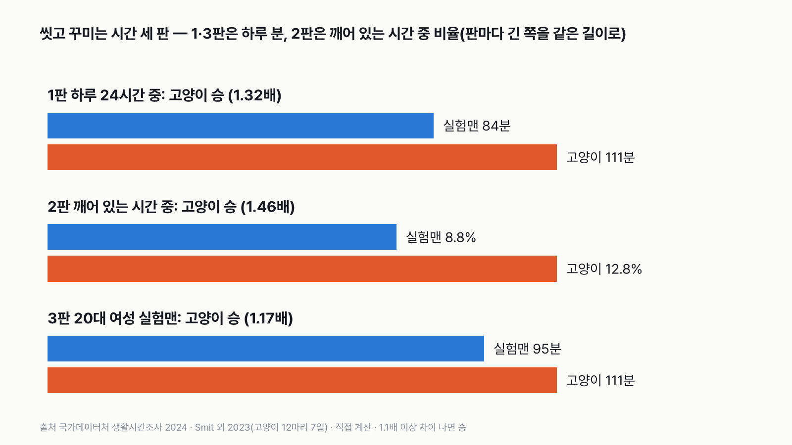
| 판 | 실험맨 | 고양이 | 배수 | 승자 |
|---|---|---|---|---|
| 1판 하루 24시간 중 | 84분 | 111분 | 1.32배 | 고양이 |
| 2판 깨어 있는 시간 중 | 8.8% | 12.8% | 1.46배 | 고양이 |
| 3판 가장 길 것 같은 집단(20대 여성) | 95분 | 111분 | 1.17배 | 고양이 |
| 최종 | 3판 고양이 3승 → 고양이 승 |
1판 하루 24시간 중: 고양이 승(1.32배)
실험맨은 하루에 씻는 데 69분, 꾸미는 데 15분을 써요. 합쳐 1시간 24분이에요. 고양이는 하루의 7.7%, 1시간 51분 동안 혼자 털을 핥고 뒷발로 몸을 긁어요. 27분 차이로 고양이가 이겨요.
2판 깨어 있는 시간 중: 고양이 승(1.46배)
실험맨은 하루 8시간 4분을 자요. 깨어 있는 15시간 56분 가운데 8.8%를 씻고 꾸미는 데 써요. 고양이는 잠이 더 많아요. 농장 고양이를 하루 내내 지켜본 연구에서 고양이는 하루의 40%를 잤어요. 이 비율로 치면 깨어 있는 14시간 24분 가운데 12.8%가 그루밍이에요. 깨어 있을 때만 보면 차이가 더 벌어져요.
3판 가장 길 것 같은 집단: 고양이 승(1.17배)
나이와 성별로 나눠 보면 하루 씻고 꾸미는 시간이 가장 긴 집단은 20대 여성이에요. 씻는 시간은 다른 나이대와 같은 69분이고, 꾸미는 시간이 26분으로 가장 길어요. 합쳐 95분이에요. 그래도 고양이 111분에는 못 미쳐요. 무승부 선은 104.5분이라, 고양이가 하루 6.3분만 덜 했어도 비겼어요.
씻는 시간은 모두 같고, 꾸미는 시간에서 갈려요
씻는 시간(개인위생)은 남녀, 나이대 할 것 없이 하루 62~75분 안에 모여 있어요. 10세 이상 99.6%가 매일 씻어요. 차이는 꾸미는 시간(외모관리)에서 나요. 여성은 하루 19분, 남성은 11분이에요. 같은 20대라도 남성은 씻기 69분, 꾸미기 12분, 합쳐 81분이에요. 꾸미는 시간이 있는 사람의 비율도 여성 70%, 남성 59%로 달라요.

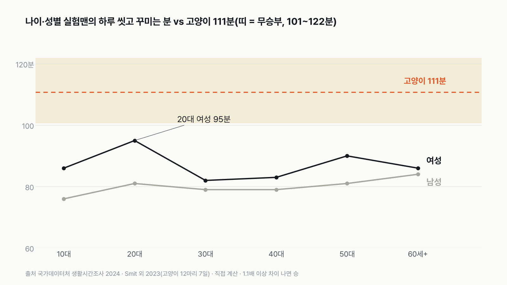
어느 나이대도 고양이를 넘지 못해요
그래프에서 실험맨 선은 모두 고양이 아래에 있어요. 남성은 10대가 76분으로 가장 짧고, 60세 이상이 84분으로 가장 길어요. 여성은 20대 95분, 50대 90분이 높고 30대가 82분으로 가장 짧아요. 무승부 띠(101~122분) 안으로 들어온 집단도 없어요.
1년으로 늘리면 7일 차이
하루 27분 차이를 1년 모으면 163시간이에요. 실험맨은 1년에 511시간, 꼬박 21일을 씻고 꾸미는 데 써요. 고양이는 674시간, 28일을 그루밍해요. 둘 다 1년 가운데 3주가 넘는 시간을 몸단장에 쓰는 것은 같아요.
'고양이는 하루 종일 씻는다'는 말
고양이가 깨어 있는 시간의 30~50%를 그루밍한다는 말이 널리 퍼져 있어요. 기본 연구로는 깨어 있는 시간의 12.8%예요. 다른 판별법이나 농장 고양이로 세면 25~34%까지 올라가요. 그래도 '하루 종일'은 아니에요.
고양이 값은 연구마다 크게 달라요
같은 12마리라도 기계가 행동을 가려내는 방법에 따라 그루밍이 하루 108분에서 298분까지 나와요. 농장에서 쥐를 잡으며 지내는 고양이 5마리는 하루 216분을 몸 손질했어요. 다른 연구에서 보호소에 들어와 혼자 철장에 지낸 고양이 6마리는 33분뿐이었어요. 어떤 연구를 쓰느냐가 고양이 쪽 숫자를 가장 크게 흔들어요.

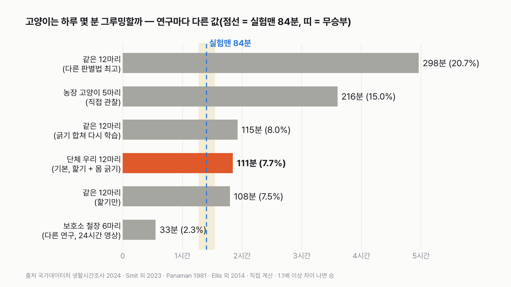
혼자 철장에 있으면 실험맨이 이겨요
철장 고양이 연구에서 고양이들은 처음 들어온 날 하루의 5.4%를 그루밍했어요. 적응한 뒤 2~5주에는 2.1~2.6%로 줄었어요. 하루 33분이면 실험맨 84분의 절반에도 못 미쳐요. 지내는 곳과 형편에 따라 그루밍 시간이 크게 달라질 수 있다는 뜻이에요.
2판은 고양이 잠에 걸려 있어요
고양이 잠 비율을 무엇으로 잡느냐가 2판을 좌우해요. 잠을 20.4%보다 많이 잡으면 고양이 승이고, 3.7%보다 적게 잡으면 실험맨 승이에요. 농장 고양이 40%, 철장 고양이 수면 연구 48~55% 모두 20.4%를 한참 넘어요. 기본 연구에서 고양이가 '누워 있던' 시간(47.5~52.7%)으로 바꿔도 고양이 승은 그대로예요.
다르게 세면
| 이렇게 바꾸면 | 실험맨 | 고양이 | 배수 | 승자 |
|---|---|---|---|---|
| 기본(1판) | 84분 | 111분 | 1.32배 | 고양이 |
| 사람: 미용실 손질까지(86분) | 86분 | 111분 | 1.29배 | 고양이 |
| 사람: 그날 씻고 꾸민 사람만 | 92분 | 111분 | 1.20배 | 고양이 |
| 3판: 20대 여성에 미용실 손질까지 | 97분 | 111분 | 1.14배 | 고양이 |
| 3판: 그날 꾸민 20대 여성만 | 103분 | 111분 | 1.08배 | 무승부 |
| 고양이: 몸 긁기를 빼고 핥기만 | 84분 | 108분 | 1.28배 | 고양이 |
| 고양이: 긁기를 합쳐 다시 학습한 모형 | 84분 | 115분 | 1.38배 | 고양이 |
| 고양이: 농장 고양이 직접 관찰 | 84분 | 216분 | 2.57배 | 고양이 |
| 고양이: 다른 연구의 철장 고양이 | 84분 | 33분 | 2.54배 | 실험맨 |
| 2판: 고양이 잠 대신 '누워 있기' 47.5~52.7% | 8.8% | 14.7~16.3% | 1.67~1.85배 | 고양이 |
| 2판: 고양이 잠 0%로 | 8.8% | 7.7% | 1.14배 | 실험맨 |
그날 꾸민 20대 여성만 보면 103분이라, 고양이와 비겨요. 반대로 다른 연구의 철장 고양이를 데려오면 실험맨이 2.5배로 이겨요. 판정을 뒤집는 건 사람 쪽보다 고양이가 어디서 어떻게 지내느냐예요.
고양이에게 그루밍은 씻기 이상
고양이의 그루밍은 털에 묻은 것을 떼어 내고 털이 체온을 지키게 해 줘요. 낯설거나 긴장되는 상황에서 핥는 시간이 늘거나 줄기도 한다는 연구도 있어요(Ellis 외 2014가 정리한 앞선 연구들). 그래서 그루밍 시간이 길면 깨끗한 고양이, 짧으면 지저분한 고양이라고 말할 수는 없어요. 사람도 아침 욕실 시간이 꼭 깔끔함의 크기는 아니듯이요.
혀와 뒷발로 하루 1시간 51분을 다듬는 고양이와, 거울 앞에서 1시간 24분을 보내는 실험맨. 내일 아침 욕실에서 보내는 시간은 몇 분일까요?
이 숫자는 어디서 왔나요
출처
기준일 사람은 생활시간조사 2024년 값이에요(KOSIS에서 2026년 11월 10일에 받음). 고양이는 2021년 관찰(Smit), 1981년 발표(Panaman), 2014년 발표(Ellis) 연구예요. 조건은 2026년 11월 10일, 원자료를 보기 전에 정했어요.
국가데이터처생활시간조사
- 성별 평균시간·행위자비율·행위자평균시간KOSIS DT_1TS202001
10세 이상 씻기·꾸미기·잠
- 연령대별 평균시간·행위자비율·행위자평균시간KOSIS DT_1TS202004원본 보기
성·나이별 씻기·꾸미기
동료 심사 논문
- Smit 외 2023, Sensors 23(16):7165doi:10.3390/s23167165원본 보기
고양이 12마리 하루 그루밍·몸 긁기 비율(기본), 누워 있기 비율
- Panaman 1981, Zeitschrift für Tierpsychologie 56:59–73doi:10.1111/j.1439-0310.1981.tb01284.x원본 보기
농장 고양이 하루 잠·몸 손질 비율
- Ellis 외 2014, Veterinary Record Open 1:e000056doi:10.1136/vropen-2014-000056원본 보기
보호소 철장 고양이 하루 그루밍 비율, 철장 고양이 수면 범위
어떻게 셌나요
- 실험맨: 통계청 생활시간조사 2024 행동분류에서 '개인위생'(S141)과 '외모관리'(S142)의 요일평균 평균시간을 더했어요. 10세 이상 전체(1·2판)와 20~29세 여성(3판)이에요. 미용실 같은 '이미용 서비스 받기'(S143)는 남이 해 주는 손질이라 뺐어요.
- 2판 깨어 있는 시간: 사람은 1,440분에서 잠(수면, 하루 484분)을 뺐어요. 고양이는 Panaman 1981의 잠 40%로 1,440 × 0.6 = 864분이에요.
- 고양이: Smit 외 2023이 12마리의 7일 내내 목걸이·하네스 가속도계 기록을 영상으로 학습한 판별 모형으로 가려낸 하루 평균 비율이에요. 저자가 '부위에 상관없이 더 일관된다'고 본 랜덤 포레스트 두 모형의 1차 값에서, 핥기(그루밍)와 뒷발로 몸 긁기(스크래칭)를 더했어요. 목걸이 7.19%, 하네스 8.20%, 평균 7.695%예요. 다른 고양이 핥아 주기는 따로 세서 빠져 있어요.
- 판정: 판마다 큰 값 ÷ 작은 값이 1.1배 이상이면 큰 쪽 승, 안 되면 무승부예요.
| 항목 | 값 | 잰 것 / 가정 |
|---|---|---|
| 실험맨 씻기 · 꾸미기(10세 이상, 요일평균) | 69분 · 15분 | 잰 것(시간일지 조사) |
| 실험맨 잠(10세 이상) | 484분 | 잰 것(시간일지 조사) |
| 20대 여성 씻기 · 꾸미기 | 69분 · 26분 | 잰 것(시간일지 조사) |
| 고양이 하루 핥기 + 몸 긁기 비율(12마리, 7일) | 7.695% | 잰 것(가속도계 + 판별 모형) |
| 고양이 잠 비율 | 하루의 40% | 다른 연구 값을 빌려 씀(가정) |
| 1년 = 365일, 날마다 같은 시간 | 1년 환산에만 | 가정 |
한계 8가지
이 데이터로 말할 수 없는 것
- 사람은 하루를 10분 단위로 적는 시간일지 조사예요. 고양이는 기계가 몸 움직임으로 가려낸 값이라 재는 방법이 달라요.
- 고양이 기본 값은 뉴질랜드 대학 연구소의 반야외 단체 우리에서 지낸 12마리예요. 집에서 사람과 사는 고양이를 하루 내내 잰 연구는 이번에 찾지 못했어요.
- 같은 12마리라도 판별 방법에 따라 그루밍이 7%에서 21%까지 나와요. 기본으로 쓴 랜덤 포레스트 모형은 그 가운데 낮은 쪽이라, 고양이에게 불리한 쪽이에요.
- 다른 고양이를 핥아 주는 행동은 모형이 거의 잡지 못해서, 일부가 혼자 그루밍으로 섞였을 수 있어요.
- 2판 고양이 잠 비율은 전제에서 정한 '같은 연구 또는 같은 계열 연구'를 벗어나, 다른 연구(농장 고양이)에서 빌렸어요. 같은 연구의 '누워 있기'는 잠 그 자체가 아니라서 교차 확인으로만 썼어요.
- 농장 고양이 연구의 '몸 손질'에 다른 고양이 핥아 주기가 들었는지는 요약만으로는 알 수 없어요.
- KOSIS 표에는 '외모관리'에 무엇이 들어가는지 세부 항목이 없어요. 사람 쪽 꾸미기와 고양이 그루밍이 하는 일이 똑같지는 않아요.
- '그날 씻고 꾸민 사람만'은 두 행동의 행위자 평균을 더한 어림이에요.
다음 대결
대결 다 보기사 온 커피값, 밥값의 5% 넘을까
실험맨, 사 온 커피값이 밖에서 먹는 밥값의 5%를 넘을까?
A넘는다vsB못 넘는다
투표하러 가기
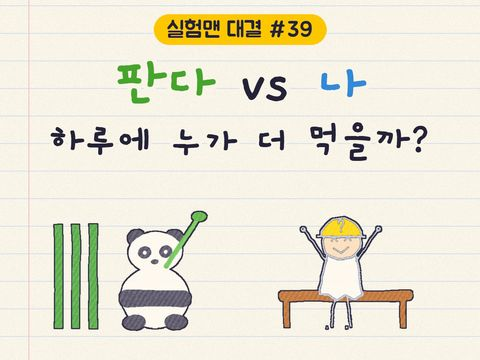
판다 vs 실험맨
판다 vs 실험맨, 다섯 판 승부로 하루에 '더 많이 먹는' 쪽은?
A판다vsB실험맨
투표하러 가기
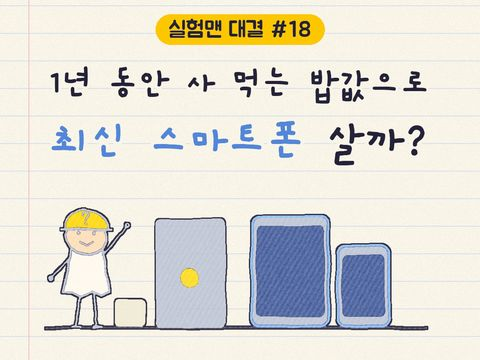
1년 밥값 vs 최신 스마트폰
실험맨이 1년 동안 사 먹는 밥값(배달 포함)으로 최신 스마트폰을 살 수 있을까?
A산다vsB못 산다
투표하러 가기
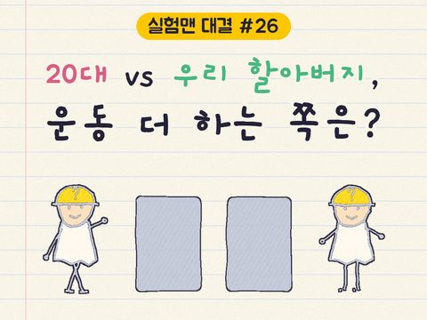
20대 vs 우리 할아버지
20대 여성 실험맨 vs 65세 이상 남성 실험맨, 네 판 승부로 하루 운동을 더 많이 하는 쪽은?
A20대 여성vsB65세 이상 남성
투표하러 가기
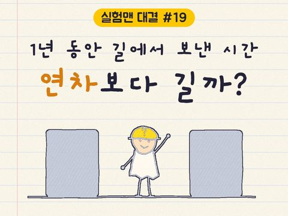
출퇴근 vs 연차
실험맨이 1년 동안 출퇴근에 쓰는 시간과 연차 휴가로 쉬는 시간, 세 판 승부로 더 긴 쪽은?
A출퇴근vsB연차 휴가
투표하러 가기
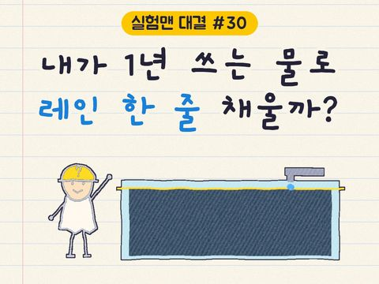
1년 쓰는 물 vs 레인 한 줄
실험맨 혼자 1년 쓴 수돗물로 25m 수영장 레인 한 줄을 채울 수 있을까?
A채운다vsB못 채운다
투표하러 가기
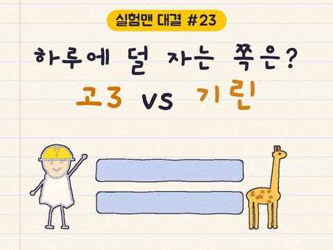
고3 vs 기린
고3 실험맨과 기린, 하루에 누가 더 적게 잘까?
A고3vsB기린
투표하러 가기
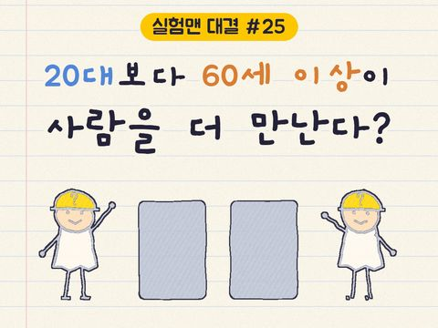
60세 이상 vs 20대
60세 이상 여성 실험맨과 20대 여성 실험맨, 하루 사람을 만나 어울리는 시간은 누가 더 길까?
A60세 이상 여성vsB20대 여성
투표하러 가기
새 글 나오면 받아 보기
피드 리더 앱에 이 사이트 주소를 한 번 넣어 두면, 새 글이 올라올 때 앱에 떠요. 가입이나 메일 주소는 필요 없어요.
받는 법 보기
- 피드 리더 앱을 하나 골라요. 새 글을 모아 보여 주는 앱이에요. 예를 들면 Feedly나 Inoreader가 있어요. 둘 다 무료고 웹·휴대폰에서 써요.
- 앱에서 '구독 추가'(+)를 누르고 아래 주소를 붙여 넣어요.
- 끝이에요. 새 글이 올라오면 앱 목록에 떠요.
https://protofu.github.io/opendata-insight/feed.xmlFeedly를 쓴다면 여기를 눌러 바로 추가할 수도 있어요.